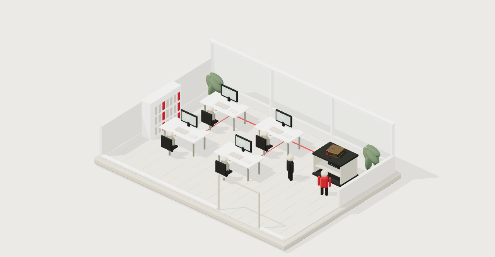

Installée dans votre étude,
sous votre contrôle.
La box et les postes de travail, réunis sur le réseau interne.
Vue d’une étude avec ses bureaux. Deux membres de l’équipe apportent la box, l’installent dans un meuble ouvert et relient les postes au réseau interne. Ce schéma illustre l’installation ; il ne décrit pas tous les flux possibles d’un déploiement réel.